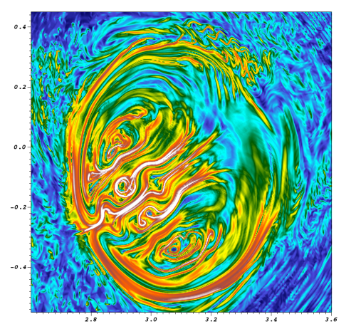

|
In Situ Calculation of Finite-Time Lyapunov Exponents (FTLE)  Problem OverviewFinite-Time Lyapunov Exponents (FTLE) inform the extent that flow through a volume is separating. The technique quantifies the separation at every location in physical space. In practice, this is done via particle advection (i.e., displacing a massless particle so that it is always tangent to the velocity). One particle is placed at each mesh point, and advected for a period, and the separation between the resulting positions of adjacent points is measured. This technique is highly valued in the ocean modeling community, fusion community, and others, since it locates the areas with similar flow patterns, as well as those with very different flow patterns. Computing an FTLE can become very expensive however, especially when it is computed on the native resolution of a dense mesh. On very large meshes, the technique may involve billions of particles going very long distances, and thus solving trillions of ordinary differential equations. Calculating FTLE in situ (meaning performing the FTLE calculation concurrent with the simulation code) is particularly difficult, since the execution time, memory requirements, and communication patterns must fit within the constraints of the simulation code. However, in situ calculation provides new opportunities for directing the simulation code itself toward the best strategy for adapting its computation over time. Specifically, this information can be used to find computational islands, and may be able to provide insight into optimally load balancing the simulation into regions which require very little communication with each other. This research project endeavors to accomplish many connected tasks. First, to find better ways of improving the current implementations of the FTLE in tools such as VisIt for use in post processing of simulation data. Second, to analyze the results and assist in discoveries in fusion. Third, to test new methods for parallelizing FTLE computation for in situ processing. And, fourth, to deploy these techniques into M3D, a tokamak fusion code used to understand nuclear plasmas. The image on this page shows the result of an FTLE calculation on a cross-section of a tokamak from an M3D simulation. The red and white areas are where flow separates the most, while the blue and green areas are where particles stay mostly together. CDUX PeopleExternal Collaborator
|